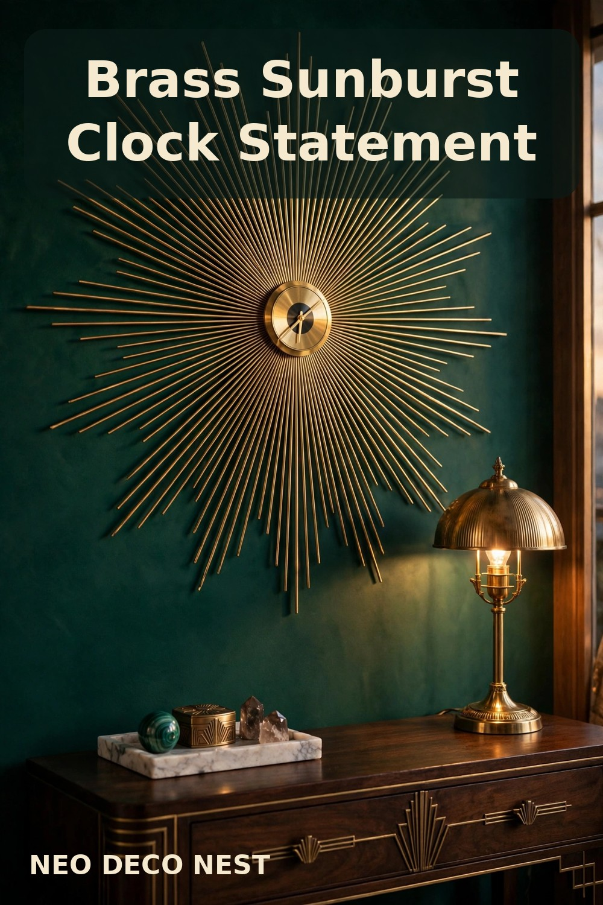
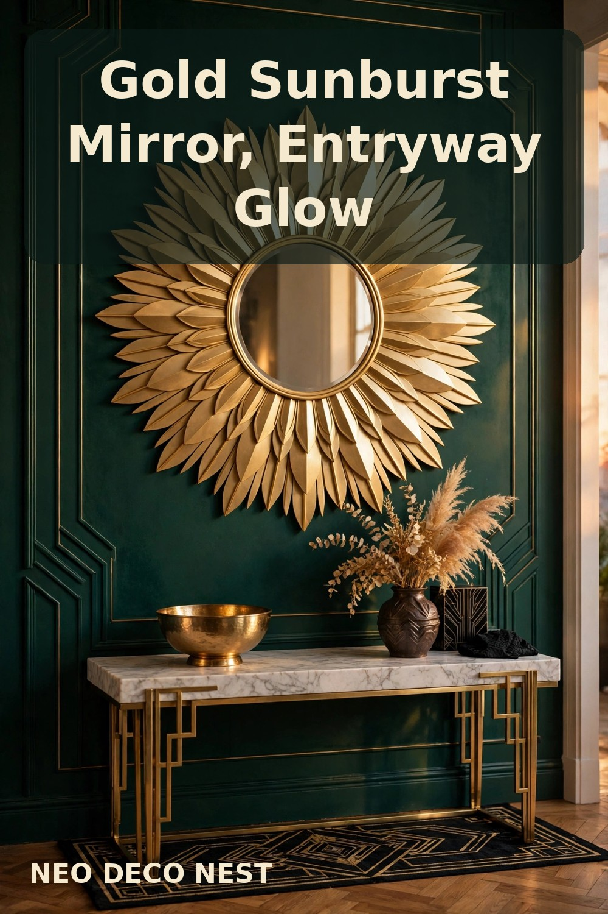
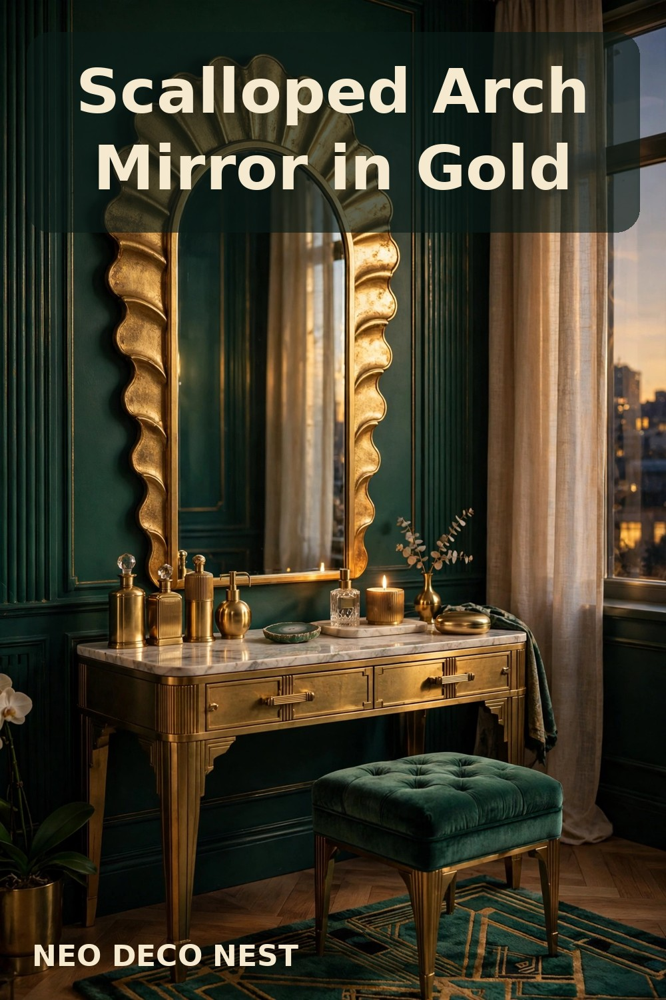
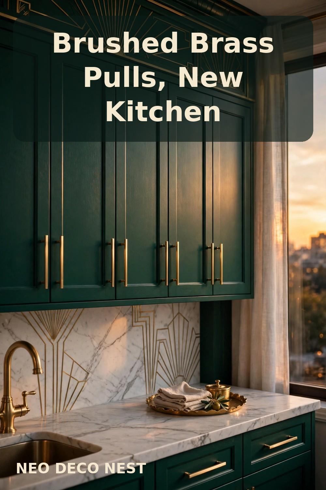
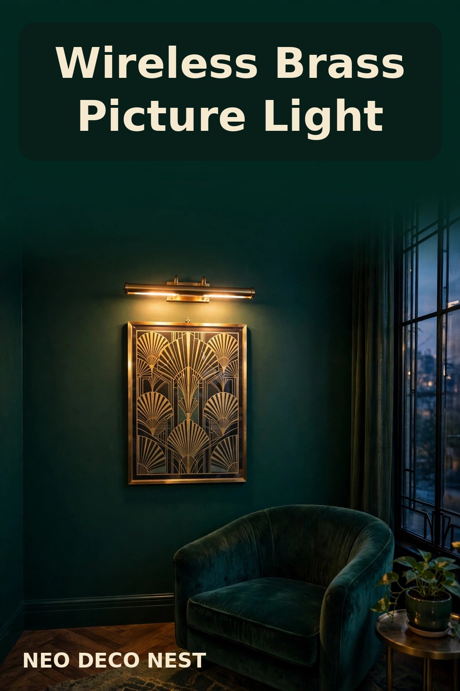

Brass Small Upgrades: 5 Weekend Changes, No Renovation
This post contains affiliate links. As an Amazon Associate I earn from qualifying purchases. If you buy through these links, we may earn a commission at no extra cost to you.
Images on this page are styled inspiration renders created for Neo Deco Nest — the Amazon listing shows the exact product, colors and dimensions.
Not every upgrade needs a contractor. Some need a screwdriver, a step stool and twenty minutes. These five brass pieces are the small changes behind our Brass Home Decor board, picked because each one transforms its wall, door or frame the day it arrives.

Cuspin Atomic Sunburst Wall Clock, 24 in
A 24-inch atomic sunburst clock in gold turns a blank wall into a Deco focal point with a single hanging point. The radiating rays do the visual work of a whole gallery wall. It suits living rooms and entryways, anywhere you want the brass note to land at eye level.

HEBOIX Sunburst Mirror, 36 in
This is the 36-inch version of the HEBOIX sunburst mirror, with petal-like metal rays in a gold finish, sized to hold its own above a console or mantel. A mirror earns its place twice in a small room: once as decor, and once for the light it bounces back. Hang it where it can catch a window or a lamp.

Besdomus Gold Scalloped Arched Mirror
A gold scalloped arch, the fan silhouette that is the signature of this channel, finished in gold leaf. The arch softens all the straight lines of a vanity or dresser, and the scalloped edge reads unmistakably Art Deco. The sizes run large, so measure your wall and let it be the biggest mirror in the room.

ZAUYX Brushed Brass Cabinet Pulls, 10-Pack
Ten brushed brass bar pulls are the fastest kitchen refresh on this list: swap the handles, keep the cabinets. The long bar profile suits shaker and flat-front doors alike, and a brushed finish hides fingerprints better than a polished one. Keep one consistent size across drawers and doors for the tailored look.

Tassuowell Wireless Picture Light, Brass Finish
A rechargeable picture light in a brass finish that mounts above a frame and turns a simple print into a gallery piece. It comes with a remote, dimming and adjustable colour temperature, and it charges like a phone, so there is no wiring and no electrician. It is the most renter-friendly upgrade in this roundup.
Every piece here was first featured on our Pinterest board. Follow Neo Deco Nest on Pinterest for a new Neo Deco find every day.